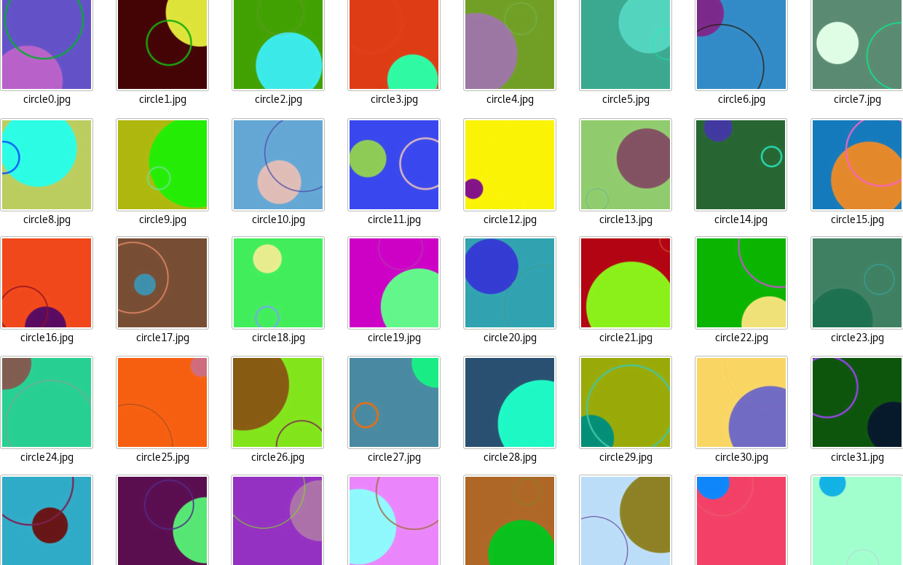

Current Project: Simple Shapes using Convolutional Neural Networks
General Problem:
To get the machine to learn simple shapes of triangle,
circles, squares and rectangles individually and their intersections.
Proposed Solution:
Since the architecture of a convolutional neural network (CNN)
focuses on the features of images in pixels, it will be able to generalize a machine
learning model of simple shapes. The first goal of the project is to get the computer
to learn each individual shape (triangle, circle, square and rectangle) generally.
The second goal is to get the machine to learn the intersection of the shapes either
by adding onto the CNN model using a recurrent network or a multi-label output
instead of a multi-class output. Simple subsets of the creation of image data
and preparing the CNN file for loading will be compiled locally on Anaconda’s
Python 3, which uses Spyder as the main IDE. The main CNN file will be tested
on Anaconda’s virtual environment in Python 2 and compiled remotely on Google
Cloud’s Machine Learning Engine using Keras as a front end library,
Tensorflow as a backend.
Actual tasks that will be performed:
1. Research on neural networks in regards to their architecture and optimization methods.
2. Learn Python 3 online and multivariable calculus. Review linear algebra.
3. Do a tutorial on a simple cats and dogs CNN, which is a very popular example on the web.
4. Read Keras documentation. There’s a cheat-sheet available online on basic functions in Keras.
5. Figure out how to successfully compile a CNN in Google Cloud’s Machine Learning Engine
6. Train the CNN as necessary, prevent overfitting, focus on optimization for a general model through feature extraction.
7. Test the CNN model by loading it and seeing how it performs on unseen images.
8. Make changes to the architecture of the CNN as necessary.
Week of October 23 2017:
The baby AI image dataset is very old and has bugs in it. I wasn’t
able to extract the dataset by running their python program. So, I spent all
this time creating my own dataset and preparing it for loading using pickle’s
serialization format into Google Cloud’s Machine Learning Engine. I created
my own python class called Draw.py, which uses multiprocessing of Pool workers
in a class to draw images themselves as well as the intersection of images.
Multiprocessing allows me to make as many images as possible by using parallel
computing of 4 cores in a CPU.



10.31.17:
The training set consists of a total of 6,200 images. Before being
serialized into a pickle file, the training set is organized in a tuple structure
(numpy array, y_label). The numpy array is the data array processed by the
PIL module in (300, 300, 3) format. The numpy array represents the matrix in
float32 of the image. The y_label represents the target values of the shapes,
which is the expected output of the convolutional neural network.
Keras requires categorical crossentropy loss to be computed with
categorical encodings. The categorical one hot encoding transfers integers
(0...number of classes) into binary format. My y_label is a series of categorical
hot encodings of 0, 1, 2 in binary format of three classes (circles, rectangles
and squares, triangle).
I had to change the numpy array data structure from a default float to
float32 bit since the loading of the pickle files in the default float structure
consumes too much memory in megabytes per file. The difference almost reduced
the entire file size from 3.0 GB (without compression) to 1.7 G.B. The pickle
files are too huge, so I have to reduce the quality and size of each image to
reduce the pickle files. Pickle loads and image creation of the shapes are
created using multiprocessing of independent Pool workers. I have been trying
to figure out how to create a pickle file, organize numpy arrays and store them
in a huge list, dump that huge list using joblib. Use memmap to store large
numpy arrays because it's inefficient for the list to increase in data memory
allocation in list comprehension of pickle loading. The file below create
(numpy arrays, y_label) tuples and stores them in a pickle file.
The short-term goal is to train the shapes individually first and then
figure out how to get the model to generalize on the “intersection” of shapes
either by using recurrent convolutional neural networks or multi-label output
using supervised learning. How will the network learn? I need to adjust the
architecture of the CNN. The multi-label output is simpler and much easier.
This requires sigmoid activation and loss = binary_crossentropy at the output
layer for multi-label output to work.
11.3-11.5.17:
Google cloud works locally but had errors of loading pickle file remotely
on google cloud because the Cloud Compute Engine doesn't recognize python's file
descriptor. I need to use tensorflow's open method, need to set gs:// for every
input file data for Google Cloud to recognized it. (See CNN loader file to run in cloud)
11.6.17:
There is an memory error when running on Google Cloud's regular CPU after
one set of 10 epochs for the first half of the dataset. There is not enough memory
allocated and training took 1 hour, which is too slow. I decided to use yaml
configuration to run on a single NVIDIA K80 GPU processor on Google Cloud Compute Engine.
11.7.17:
I executed this with no errors in Google Cloud with GPU computing on a
validation set 1000 images and training set of 6000 images with roughly 60 percent
accuracy, 3 percent error rate in 3 series of 10 epochs per training set each.
The learning model is able to be saved. Google Cloud automatically plots the
gradient on Tensorboard. The reason the error rate is so high and accuracy is low
is because there are alot of background samples that the CNN intakes as pool sizes.
Background colored samples are data that contains no linear information -
unimportant numpy array figures. so when the network does the maxpool of background
samples near the 'important line samples', if the background samples are in greater
distributation than the amount of important line samples, maxpool will label that
area as background sample which makes the neurons increase the weights for backgrounds
instead of the contour images itself.
11.8.17:
I increased the y-label output from 3 classes to 4 classes. Keras does
the automatic shuffle at every epoch in fit_generator. I changed the architecture
of the CNN, add drop out layers that might drop out neurons that have no data of
contour characteristics being drawn or do some cropping of batches that do not
consist of contour information beforehand. I increased the pool size of the CNN
and changed it from adam optimizer to rms optimizer. The CNN will do fit the generator
model from data augmentation in 20 epochs with validation and training inputs inputted.
I also implemented the validation set correctly during the fitting of the network with
real data augmentation. The CNN does poorly during training, with an accuracy of 59
percent and 6 percent loss. This is because I used 3,000 images to train the dataset,
which is 1/3 of the total training set, which might not contain evenly distributed
images of each type of shape. I reduced the total training set by a third because
I want to focus on getting the architecture of the CNN right and there is memory
error at the Tesla K80 GPU from the loading of the images since the validation data
increased by twice as much as the previous one.
11.9.17:
Trying to figure out how to redesign the architecture of my CNN by looking
back on the research I did in Neural Network Design. I also need to create my
own data generator (augmentation) function that crops large scaled images to
reduce unnecessary background sampling of images in Pooling. I don’t want to
separate the contours and filling of the images from the background because
the background plays an important part in the composition of the entire image
object. Such images that need to be cropped, where the dotted lines represent
the cropping location, in a generator function are:


Also don't know I'm having a segmentation fault when implementing
command line arguments in the cnn_sobel_py2.py file. This segmentation fault
happens even without implementing the crop function that has a broken cv2
module installation in python 2. Python 3 in cv2 works fine. It is because
of the opencv2 installation conda install -c https://conda.binstar.org/menpo
opencv (in python 2 py27 environment). In python 3, it cv2 is installed in
conda install --channel https://conda.anaconda.org/menpo opencv3 (
not on environment). It's also I didn't use conda install -c conda-forge
opencv (didn't include conda-forge. I'm testing it on my other machine to
see if it works.
11.15.17:
The cropping function called get_edges works in the convolutional neural
network loader, but Keras' generator wants me to return the original shape of
the array (300, 300, 300). The resulting image being generated by the processor
function get_edges is a cropped version of the image pasted on a white background
which is 300 by 300 pixels. So the object is segmented from the background in
this way. I don't know how to tell keras during the convolution to ignore all
pure white pixels, or change to a higher stride if it reaches the white background.
(The second option seems to be a better design, I'll look into it after finding
out how the network will do with the cropping function being implemented)
Get_edges cropping function will get boundaries of contour shapes and crops
the images based on the location of the rectangular boundaries.
Increased the offset from 15 to 50 or even 100, to allow more space for boundary area.
This is because sometimes the cropping function crops the lines of the shape that are
at the edges. I also need to write a function to remove cropped layers that are too
small because that information is ambiguous, which might confuse the features the
cnn is trying to detect. Such examples are seen in the images below, which needs
to be removed from the training_set once the cropping dimensions reach to a space where it's too small
11.16.17:
The current designs of the cnn architecture are:
Cropping as a Function Call V.S. Cropping as a Layer in between Convolutions


If offset is 50 or greater, the offset extends the original image when pasted on the
background (ValueError: tile cannot extend outside image) Going to clarify the architecture
of the cnn (number neurons adjustment) and adding more details that are consistent with
the code in the
cnn loader file.
11.17.17–11.20.17:
There are some minor problems when Keras process the dataset from the image
generator using the get_edges preprocessing function. Cropping as a preprocessing
function works but the sobel algorithm sometimes returns an empty contour list.
This is because the image contains an object that blends so well with the background
or an object is too small for the sobel algorithm to detect the contours. In the
get_edges function if it’s included in the main convolutional neural network
loader file, it will return the original image array without the cropping if
the contours are empty. Cropping as a layer would not work in this case of exactly
cropping the background data because Keras’ Cropping2D layer crops all the input
images once, which will manipulate the data too much where you can’t figure out
squares from rectangles.
11.20.17-12.1.17:
The cropping of the images will be incorporated as a function since the
cropping as a layer only works for an entire dataset input, not per image. The
convolutional neural network might have better accuracy with PNG files than JPG
files. Due to memory limitations, JPG files will be used. I looked at the difference
between the file types: PNG has more detail and JPG has some noise at some contours.
Google Cloud has memory limitations per job. Increasing the number of GPUs won’t
make a difference to the memory limit for a Google Cloud job. I created a virtual
machine instance with 58GB of memory at the root in the cloud to solve this problem,
and installed Tensorflow from source with GPU CUDA support for their Tesla K80 GPU.
I've been trying to get my neural network to perform better accuracies and losses,
it seems to not reach an accuracy over 75%. I tried increasing the number of layers,
but it didn't work. I might try fine-tuning the dropout and add a stride of 2,2
parameters for the convolutional layers. I also don't need to split the dataset
anymore, running 8000 images for training and 1600 images for validating the training
set. I got the multilabel classification (intersections of shapes) to work by changing
the y_labels using the cross entropy function to binary_crossentropy and sigmoid
activations. I will test that after this set has a better accuracy. I am reading up
on how to change my code to recurrent convolutional neural networks where the convolution
layer will get the pixelized data from the images, followed by a LSTM recurrent layer
which will perform object classification and detection using rectangular boundaries
rather than the Dense MLP layer I have currently.
12.5.17–12.8.17:
The compression of PNG image data is more than half the total size of JPG
total image data (from 225 MB for JPG to 64 MB for PNG for 16000 images). I decided
to see if I can get better training in PNG data. The main reason why the loss won’t
go any lower than 0.38 is because of the input data; the input data is too complicated
with the intersection of the same shapes per image. I decided to simplify that by
drawing one shape per image. I manually select my data because I noticed that the
data is far from perfect: circles are diluted, squares and rectangles need to be in
the image instead of off the border and the triangles are too small. To deal with
the background issue, I must get Draw.py to return rgb as a string, convert it to
tuple in order to get the background color of that image. I need that background
color since I would be using the Sobel algorithm to crop the images and a CNN requires
it to be the same shape. There will be no preprocessing as a function used in the main
CNN loader file because I already did the cropping manually through the cnn_sobel_main.py
file and saving them as images. Basically, the Sobel algorithm crops the image, the Image
module fills it with the same background color and the cropped image is pasted on a
200 pixels by 200 pixels image.
12.8.17–12.15.17:
The model is underfitting the dataset since the validation loss is half
of the training loss. The loss got a lot lower to around 0.15, with an accuracy
of 94%. The test loss is 1.02644992199 with a test accuracy 0.935570469799. This
is a lot better from the previous data input of images. I would need to increase
the training input and the number of layers in the CNN architecture. After the CNN
architecture is changed, there’s much less of an underfit with a starting training
loss of 0.3778 and training accuracy of 0.8355, and the validation loss is 0.12 and
validation accuracy is 0.96. I’m not sure if that’s underfitting or if it’s good.
The training looks like it’s getting to a lower loss of 0.112.